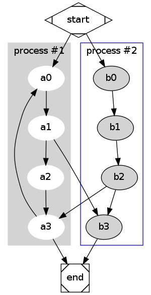
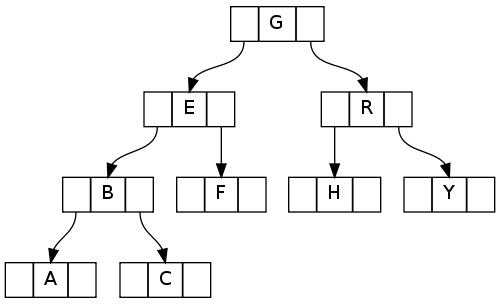

Graphviz简介
Graphviz简介开源项目Graphviz是一种基于文本格式的作图工具，用于展示结构化数据。
Graphviz包含了若干布局程序，并且包含了外围的Web接口和图形化的交互接口， 辅助工具，库以及特定语言的绑定。
Graphviz的布局程序
Debian下的Graphviz安装sudo apt-get install graphviz graphviz-doc graphviz-dev
可以根据需要安装：
The Dot Language
Syntax
ConventionsThe following is an abstract grammar defining the DOT language, we use the following conventions:
| separate alternatives.
Production Rules
graph -> [ strict ] ( graph | digraph ) [ ID ] '{' stmt_list '}'
stmt_list -> [ stmt [ ';' ] [ stmt_list ] ]
stmt -> node_stmt
| edge_stmt
| attr_stmt
| ID '=' ID
| subgraph
attr_stmt -> (graph | node | edge) attr_list
attr_list -> '[' [ a_list ] ']' [ attr_list ]
a_list -> ID [ '=' ID ] [ ',' ] [ a_list ]
edge_stmt -> (node_id | subgraph) edgeRHS [ attr_list ]
edgeRHS -> edgeop (node_id | subgraph) [ edgeRHS ]
node_stmt -> node_id [ attr_list ]
node_id -> ID [ port ]
port -> ':' ID [ ':' compass_pt ]
| ':' compass_pt
subgraph -> [ subgraph [ ID ] ] ' { ' stmt_list ' } '
compass_pt -> (n | ne | e | se | s | sw | w | nw | c | _ )
edgeop -> —
| ->
有些终结符类需要说明：ID -> Any string of alphabetic ([a-zA-Z\200-\377]) characters, underscores ('_') or digits ([0-9]), not beginning with a digit
| [-]?(.[0-9]+ |
[0-9]+(.[0-9]*)? ); |
|'**"**' *string* '**"**'
***comments*** -> // ...
| /*...*/
| ^# ...
Some Notessome notes
Examples
Example-1: Flow Chart这里是Dot写的流程图：
digraph G {
subgraph cluster_0 {
style=filled;
color=lightgrey;
node [style=filled,color=white];
a0 -> a1 -> a2 -> a3;
label = "process #1";
}
subgraph cluster_1 {
node [style=filled];
b0 -> b1 -> b2 -> b3;
label = "process #2";
color=blue
}
start -> a0;
start -> b0;
a1 -> b3;
b2 -> a3;
a3 -> a0;
a3 -> end;
b3 -> end;
start [shape=Mdiamond];
end [shape=Msquare];
}
用dot布局所生成的结果：
|  |
| Flow Chart |
Example-2: Data Structure这里是数据结构中的一棵树的图形表示,注意其中 node port的定义
digraph g {
node [shape = record,height=.1];
node0[label = "<f0> |<f1> G|<f2> "];
node1[label = "<f0> |<f1> E|<f2> "];
node2[label = "<f0> |<f1> B|<f2> "];
node3[label = "<f0> |<f1> F|<f2> "];
node4[label = "<f0> |<f1> R|<f2> "];
node5[label = "<f0> |<f1> H|<f2> "];
node6[label = "<f0> |<f1> Y|<f2> "];
node7[label = "<f0> |<f1> A|<f2> "];
node8[label = "<f0> |<f1> C|<f2> "];
"node0":f2 -> "node4":f1;
"node0":f0 -> "node1":f1;
"node1":f0 -> "node2":f1;
"node1":f2 -> "node3":f1;
"node2":f2 -> "node8":f1;
"node2":f0 -> "node7":f1;
"node4":f2 -> "node6":f1;
"node4":f0 -> "node5":f1;
}
显示如下：
|  |
| Data Structure Tree |
Graphviz命令
Emacs Dot－modemscgen:(sequence chart) http://www.mcternan.me.uk/mscgen/
artist mode
docview mode
Wiki comments powered by Disqus

Contact: mmmyddd@github 2009-2019 © CopyLeft Contributed |
[ Top | Up | Dir | Home ] |
|||||